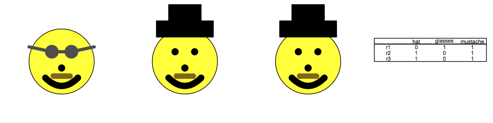
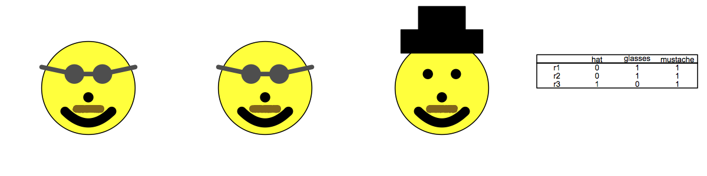

On whether to argmax
Chris Potts, 2012-07-19
- Overview
- Relevant matrices
- Standard IBR output
- Surprisal IBR output
- IBR without argmax
- SurprisalIBR without argmax
- The Frank–Goodman speaker
This page presents two 3 × 3 matrices that highlight the differences between taking argmax, as in standard IBR, and not taking it. High-level summary:
- The two matrices are not different in relevant ways.
- Standard IBR converges on one kind of <speaker, listener> pair, whereas all the other models converge on another. Both the speaker and the listener differ.
- The crucial factor in the two kinds of output is whether one uses argmax.
- If IBR is run with SurprisalSpeaker as the initial function, it groups with the argmax=FALSE functions and against plain IBR. The reason is that SurprisalSpeaker incorporates the equivalent of two non-argmax listeners, allowing it to simulate, in early stages, an argmax=FALSE model. In many cases, if SurprisalIBR runs longer, it converges towards IBR.
The initial exploration was done with CheckArgmax in experimentPrep.R
In the space of 3 × 3 matrices, there are exactly two that give different outputs depending in whether we argmax. Here I give them with their corresponding helper visualizations
- m1 = matrix(c(0,1,1,1,0,1,1,0,1), byrow=T, nrow=3)
- rownames(m1) = c('r1','r2','r3')
- colnames(m1) = c('hat','glasses','mustache')
- m1
- hat glasses mustache
- r1 0 1 1
- r2 1 0 1
- r3 1 0 1
-
- MatrixViz(m1, print.matrix=T)
- 
- m2 = matrix(c(0,1,1,0,1,1,1,0,1), byrow=T, nrow=3)
- rownames(m2) = c('r1','r2','r3')
- colnames(m2) = c('hat','glasses','mustache')
- m2
- hat glasses mustache
- r1 0 1 1
- r2 0 1 1
- r3 1 0 1
-
- MatrixViz(m2, print.matrix=T)
- 
These are not really different conceptually. In both, all three rows have exactly two 1s on them. Two of the rows are the same, and the third is different.
For the rest of this page, I illustrate with m1. The steps for m2 are the same in all cases
- IBR(m1)
- [[1]] ## Speaker
- hat glasses mustache
- r1 0.0 0.5 0.5
- r2 0.5 0.0 0.5
- r3 0.5 0.0 0.5
-
- [[2]] ## Listener
- r1 r2 r3
- hat 0.00 0.50 0.50
- glasses 1.00 0.00 0.00
- mustache 0.33 0.33 0.33
-
- [[3]] ## Speaker
- hat glasses mustache
- r1 0 1 0
- r2 1 0 0
- r3 1 0 0
SurprisalIBR is IBR but we begin with SurprisalSpeaker rather than S0:
- SurprisalIBR(m1)
- [[1]] ## Speaker
- hat glasses mustache
- r1 0.0 0.75 0.25
- r2 0.6 0.00 0.40
- r3 0.6 0.00 0.40
-
- [[2]] ## Listener
- r1 r2 r3
- hat 0 0.5 0.5
- glasses 1 0.0 0.0
- mustache 0 0.5 0.5
-
- [[3]] ## Speaker
- hat glasses mustache
- r1 0.0 1 0.0
- r2 0.5 0 0.5
- r3 0.5 0 0.5
If we set argmax=FALSE, then the progression is towards the output of SurprisalIBR.
- Iterator(m1, argmax=FALSE, maxiter=10000)
- [[1]] ## Speaker
- hat glasses mustache
- r1 0.0 0.5 0.5
- r2 0.5 0.0 0.5
- r3 0.5 0.0 0.5
-
- [[2]] ## Listener
- r1 r2 r3
- hat 0.0000000 0.5000000 0.5000000
- glasses 1.0000000 0.0000000 0.0000000
- mustache 0.3333333 0.3333333 0.3333333
- .
- .
- .
- [[9999]] ## Speaker
- hat glasses mustache
- r1 0.0000000 0.9998666 0.0001333919
- r2 0.5000334 0.0000000 0.4999666453
- r3 0.5000334 0.0000000 0.4999666453
- [[10000]] ## Listener
- r1 r2 r3
- hat 0.000000000 0.5000000 0.5000000
- glasses 1.000000000 0.0000000 0.0000000
- mustache 0.000133383 0.4999333 0.4999333
The output here is the same as the output for IBR with argmax=FALSE.
There are three equivalent ways of specifying the Frank–Goodman model using our code:
- FG(m1)
- Lbayes(SurprisalSpeaker(m1), m1)
- Lbayes(S(L(S0(m1), m1)), m1)
The output tends in the direction of SurprisalIBR and the argmax=FALSE models:
- r1 r2 r3
- hat 0.00 0.50 0.50
- glasses 1.00 0.00 0.00
- mustache 0.24 0.38 0.38
If FG were allowed to iterate with Lbayes and S, it would end up like IBR(m1, argmax=FALSE).